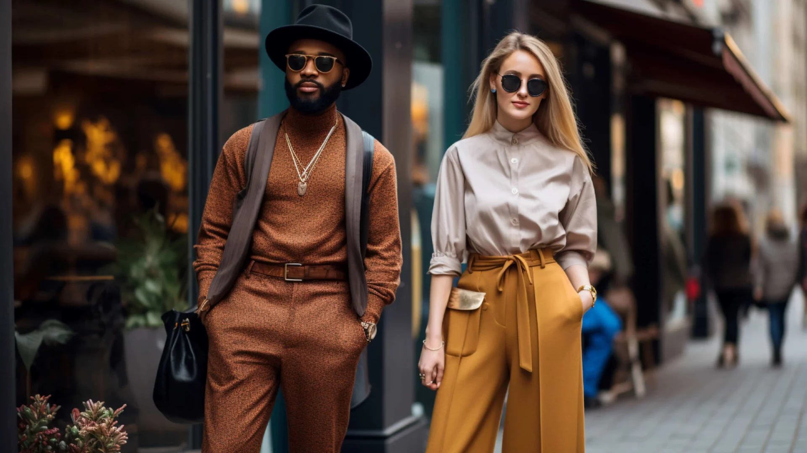

A moda no Brasil é conhecida por sua diversidade e criatividade. De estilos urbanos a peças inspiradas na natureza, há uma variedade de tendências para explorar.
As estampas tropicais estão em alta, trazendo a vibe descontraída das praias brasileiras para o dia a dia.
O minimalismo urbano também é uma tendência forte, com cores sóbrias e cortes simples que transmitem elegância e modernidade.
Cada vez mais, os brasileiros estão buscando opções de moda sustentável, valorizando marcas que se preocupam com o meio ambiente e condições de trabalho justas.
